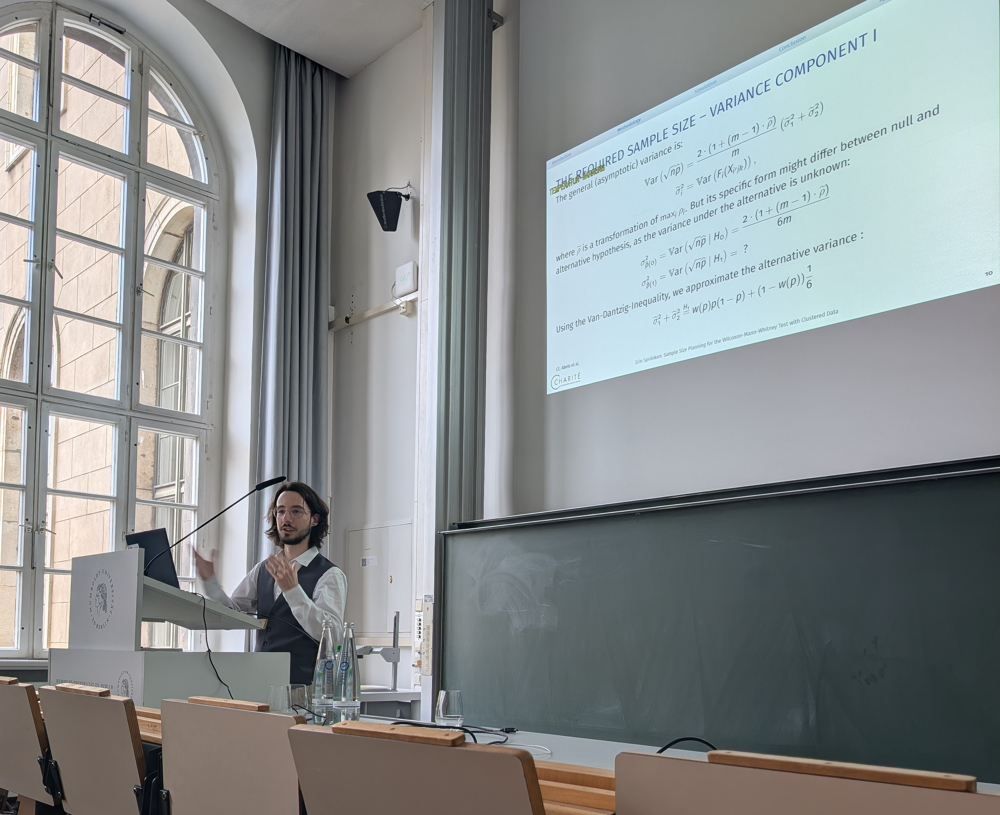
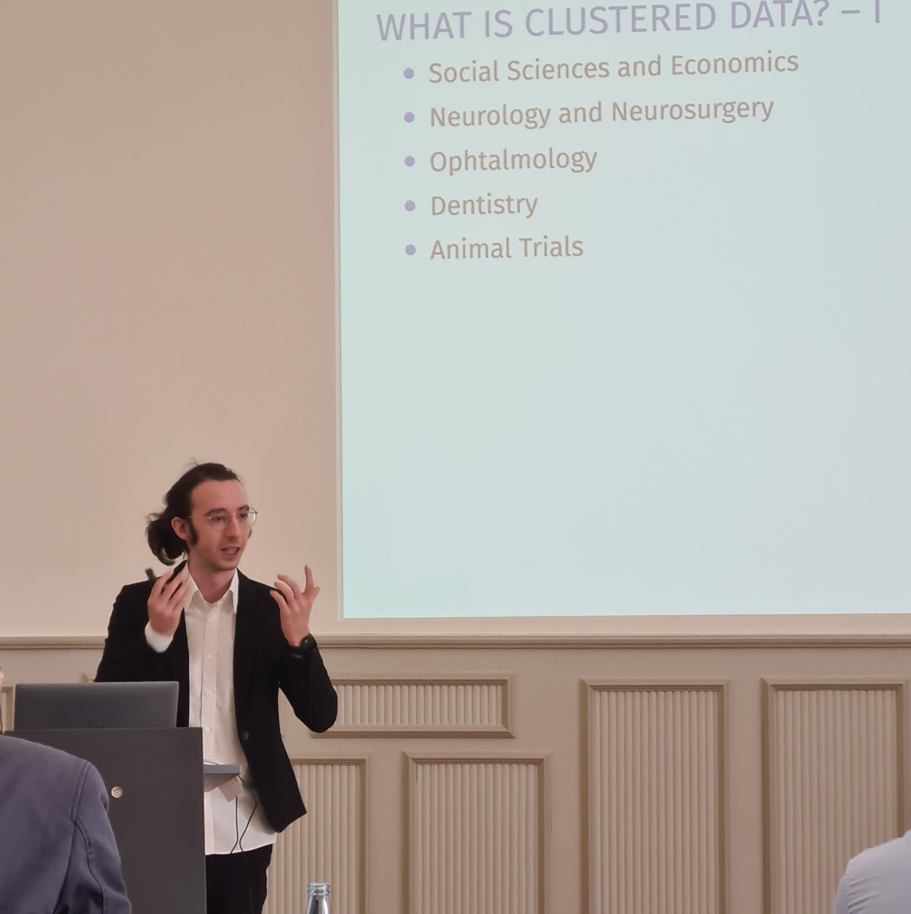

Welcome to my website! I am Erin, a statistician specializing in nonparametric statistics and biometrics. My expertise lies in rank-based methods and hypothesis testing. On this site, you will find a first impression of my work.
My work, besides working on (pre-)clinical trials, covers mathematical research, statistical planning and analysis of (pre-)clinical data and statistical consultation.
Furthermore, I am involved in teaching statistics in a variety of programs of the Charité - Universitätsmedizin Berlin, Humboldt-Universität zu Berlin and Freie Universität Berlin.
My work, besides working on (pre-)clinical trials, covers mathematical research, statistical planning and analysis of (pre-)clinical data and statistical consultation.
Furthermore, I am involved in teaching statistics in a variety of programs of the Charité - Universitätsmedizin Berlin, Humboldt-Universität zu Berlin and Freie Universität Berlin.

